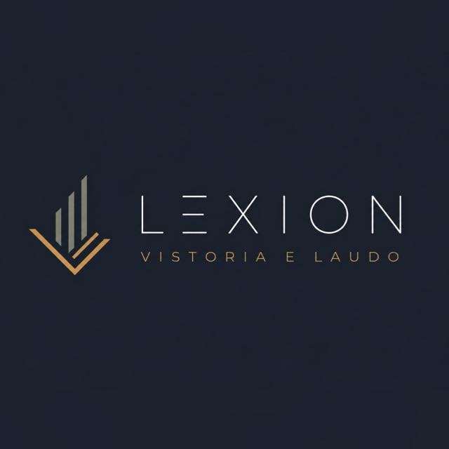

A Lexion Engenharia Civil atua no mercado oferecendo soluções completas em assistência técnica, vistorias técnicas e reformas.
Com 04 anos de experiência em vistoria e assistência técnica e 2 anos de atuação no segmento de reformas, construímos uma trajetória baseada em qualidade, comprometimento e excelência técnica.
Já foram realizadas mais de 1.000 unidades vistoriadas, auxiliando clientes, construtoras e empreendimentos na identificação de problemas, prevenção de falhas e execução de soluções eficientes.
Identificação, análise e solução de problemas relacionados à construção civil.
Inspeções detalhadas para avaliar as condições do imóvel e identificar possíveis falhas.
Soluções completas para modernização e recuperação de ambientes.
Entre em contato com a Lexion Engenharia Civil e solicite uma avaliação técnica.
📧 contato@lexionengenharia.com.br
📞 (11) 99917-4953